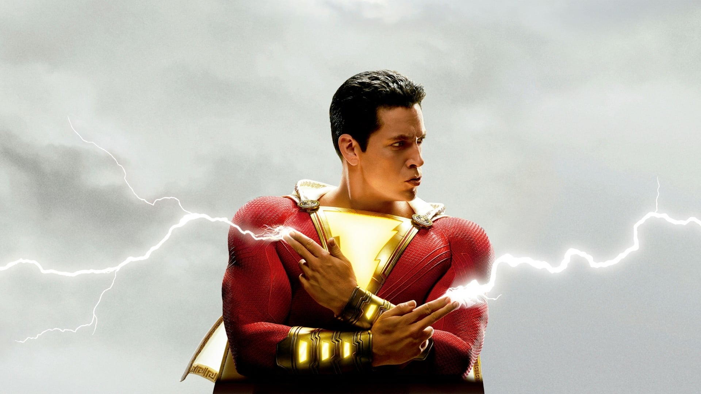

В каждом из нас живет супергерой, нужна лишь толика магии, чтобы он проявил себя. Билли Бэтсон должен прокричать всего лишь одно слово - ШАЗАМ! - чтобы из сообразительного четырнадцатилетнего мальчишки превратиться во вполне себе взрослого супергероя Шазама, а все благодаря древнему волшебнику. В душе он остается ребенком, пусть и во взрослом могучем теле, поэтому поступает так, как поступил бы любой подросток, получивший сверхспособности, - оттягивается на полную катушку в этой подросшей версии себя самого! А умеет ли он летать? А есть ли у него рентгеновское зрение? Может ли он стрелять молниями из рук? А может ли пропустить контрольную по обществознанию? Шазам проверяет границы своих возможностей с бесшабашностью расшалившегося ребенка.
Но ему придется быстро обрести контроль над своими способностями, чтобы сразиться со смертоносными силами зла доктора Таддеуса Сиваны.
